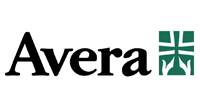

MEDITECH COVID-19 Workflows
Guiding Customers through the COVID-19 Pandemic.
As healthcare organizations are racing to vaccinate staff and communities, they’re also confronting highly contagious new strains of COVID-19 that threaten to drive future surges. And yet, they continue to embrace innovative strategies to meet this historic challenge, inspiring all of us with their selflessness and determination.
Arming customers with robust solutions for combatting the virus has been our priority throughout the pandemic. From virtual care and patient monitoring to contact tracing and rapid vaccine administration, here are some of the ways MEDITECH can support you.

Accelerate the vaccine administration process.
Quick Vaccination
Reduce the burden of mass distribution with MEDITECH’s Quick Vaccination, a flexible, web-based solution that streamlines workflow. Integrated with the MEDITECH Immunization Interface, Quick Vaccination automatically sends vaccine data to your state's Immunization Information System.
Vaccine certificates
Quick Vaccination automatically generates certificates, a CDC requirement for patients to receive the second dose and validate vaccination. Accessible from the Patient and Consumer Health Portal, certificates include:
- Vaccine manufacturer.
- Date of vaccination.
- Care setting in which it was administered.
Track vaccine deployment.
Meet the unique and shifting requirements of federal and state governments with patient registries that support the entire vaccine administration process.
- Track employees and front-line workers
- Identify eligible recipients by location, such as long-term care facilities
- Monitor lists of patients based on age, occupation, comorbidities, and risk factors
- Catch eligible patients not yet vaccinated and follow up through the patient portal
- Identify high-risk patients to ensure they’re prioritized for vaccination, and verify they experienced no side effects after administration
- Follow up with patients who have not yet completed their course of treatment or scheduled their second dose
Trace COVID-19 exposure stemming from an inpatient stay.
Emanate Health enlisted MEDITECH’s Professional Services team for support in developing a contact tracing tool that would identify staff and patients at high risk for COVID-19 exposure.
“Emanate Health implemented plans to safely identify staff who have come into contact with a patient who has tested positive for the virus. The data helps clinical operations know where transmissions are happening within our three hospitals. This unique contract tracing program was specifically developed for our EHR and how we work here at Emanate Health, helping us achieve some promising outcomes.”
Loucine Kasparian
Infectious Disease Director
Emanate Health
Monitor your patients’ COVID-19 status.
Identify and monitor inpatients’ COVID-19 status using Surveillance, MEDITECH’s predictive analytics solution. Surveillance generates electronic alerts to status boards and trackers, all of which reflect patients’ current status. These notifications help keep staff, and other patients, safer.
Read the success story
Find out how The Valley Hospital (Ridgewood, NJ) built three Surveillance profiles to manage and monitor COVID-19.
Watch the on-demand webinar
This demonstration of Surveillance workflow guidance is followed by a discussion on surveying patients with suspected COVID-19.
Use the power of analytics to stop the spread.
Leveraging the flexibility of MEDITECH’s Business and Clinical Analytics solution, healthcare organizations are able to gain the insight needed to make informed decisions and report COVID-19 data to governing bodies.
NMC Health
Worked with MEDITECH’s Professional Services to build COVID-19 dashboards that:
- Display real-time snapshots of inpatients, locations, testing status, and ventilator usage.
- Leverage integration with Supply Chain to monitor high-demand items, such as PPE.
Firelands Regional Medical Center
Created COVID-19 dashboards to:
- Provide hourly updates to the Command Center.
- Monitor surge capacity, clusters, and bed occupancy.
- Compare labs for fastest turnaround times.
- Track mortalities and discharges.
CalvertHeath
Built two dashboards — each in under 24 hours — to meet state daily reporting requirements, including:
- A COVID-19 reporting dashboard to track admissions, ICU patients, ventilator usage, discharges, and mortalities.
- An Occupancy dashboard to track bed availability in acute, pediatric, and ICU settings.
Keep patients safer with Virtual Care.
Patients fearful of exposure to COVID-19 often delay care, which can have dire consequences. MEDITECH’s Virtual Care solution provides them with access to physicians from the comfort of home, through both scheduled appointments and on-demand, urgent care visits.
Markham Stouffville was one of the first hospitals in Canada to leverage virtual care, significantly boosting patient portal enrollment.
Citizens Memorial turned to virtual visits early in the pandemic to pre-screen patients for COVID-19 and support a wide range of appointments.

Avera Health expanded their comprehensive Avera@Home virtual care program to support COVID-19 volumes.
Minimize contact when hands-on care is necessary.
When hands-on care is the only option, here’s how MEDITECH helps your organization limit patients’ exposure:
Contactless Check-In
Reduce wait times with a pre-arrival solution that allows patients to complete forms using their own devices.
Questionnaires
Enable patients to submit questionnaires online prior to appointments for faster processing and intake.
Remote Monitoring
View and trend vital signs collected from home devices to help keep patients’ chronic conditions under control.
Acknowledging everyday heroes.
The COVID-19 pandemic brought to light countless acts of heroism. Here’s a glimpse of everyday heroes across MEDITECH’s community:
Terrance Lee, MD, MPH, Beth Israel Deaconess community hospitals
After preparing his own organization with a surge plan, Dr. Lee volunteered to serve on the frontlines in New York City — where he contracted the virus. While quarantining at home, he worked with a BID programming team to develop dashboards and reports, assisted with launching telehealth across three hospitals, and documented his experiences on Twitter.
Phoebe Putney Health System
Southwest Georgia was the unlikely location of the fourth-hottest hotspot in the world last April. But Phoebe Putney Memorial Hospital’s disaster preparedness helped them to marshal an extraordinary operational and technical counterattack, juggling competing priorities amid concerns for employee well-being and the health of its close-knit community.
Lawrence General Hospital
Located in one of the hardest hit cities in Massachusetts, Lawrence General implemented drive-thru testing that now tests over 1,400 patients per day and provides a model for other organizations to follow. Through strong partnerships with the governor and mayor, they were identified as a high-volume testing site in their Stop the Spread initiative — a testing program that offers free, easily accessible testing to state residents. Despite a surge in testing, their frontline healthcare workers continue to step up their efforts to meet the increased demand.
Cayuga Health
Staff at Cayuga Medical Center and Schuyler Hospital rose to the challenge, both in Ithaca and across the state. First, they deployed their mobile team to Seneca View, Schuyler Hospital’s 120-bed skilled nursing facility— as well as a local assisted living facility in Ithaca— to proactively test high-risk residents for COVID-19. Then, 50 clinicians volunteered for the month-long New York City medical mission at the epicenter of the pandemic.
Learn how Emanate Health is using Business and Clinical Analytics to support contact tracing.